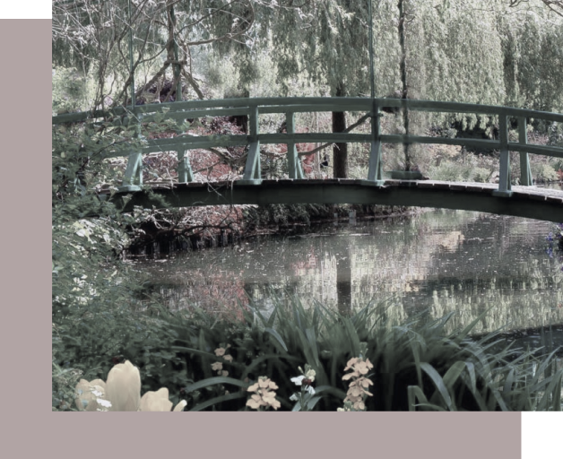

Claude Monet also known as Oscar-Claude Monet or Claude Oscar Monet (November 14, 1840 – December 5, 1926) was a founder of French impressionist painting, and the most consistent and prolific practitioner of the movement's philosophy of expressing one's perceptions before nature, especially as applied to plein-air landscape painting. The term Impressionism is derived from the title of his painting Impression, Sunrise.Claude Monet was born on November 14, 1840 on the fifth floor of 45 rue Laffitte, in the ninth arrondissement of Paris. He was the second son of Claude-Adolphe and Louise -Justine Aubrée Monet, both of them second-generation Parisians. On May 20, 1841, he was baptized into the local church parish, Notre-Dame-de-Lorette as Oscar-Claude. In 1845, his family moved to Le Havre in Normandy. His father wanted him to go into the family grocery store business, but Claude Monet wanted to become an artist. His mother was a singer.
Claude Monet
Early life
Giverny
At the beginning of May 1883, Monet and his large family rented a house and two acres from a local landowner. The house was situated near the main road between the towns of Vernon and Gasny at Giverny. There was a barn that doubled as a painting studio, orchards and a small garden. The house was close enough to the local schools for the children to attend and the surrounding landscape offered an endless array of suitable motifs for Monet's work. The family worked and built up the gardens and Monet's fortunes began to change for the better as his dealer Paul Durand-Ruel had increasing success in selling his paintings. By November 1890 Monet was prosperous enough to buy the house, the surrounding buildings and the land for his gardens. Within a few years by 1899 Monet built a greenhouse and a second studio, a spacious building, well lit with skylights. Beginning in the 1880s and 1890s, through the end of his life in 1926, Monet worked on "series" paintings, in which a subject was depicted in varying light and weather conditions. His first series exhibited as such was of Haystacks, painted from different points of view and at different times of the day. During World War I, in which his younger son Michel served and his friend and admirer Clemenceau led the French nation, Monet painted a series of Weeping Willow trees as homage to the French fallen soldiers. Cataracts formed on Monet's eyes, for which he underwent two operations in 1923. The paintings done while the cataracts affected his vision have a general reddish tone, which is characteristic of the vision of cataract victims. It may also be that after surgery he was able to see certain ultraviolet wavelengths of light that are normally excluded by the lens of the eye, this may have had an effect on the colors he perceived. After his operations he even repainted some of these paintings, with bluer water lilies than before the operation.
The Life Of Claude Monet
Museum of Impressionism Giverny